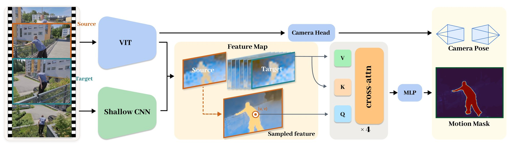
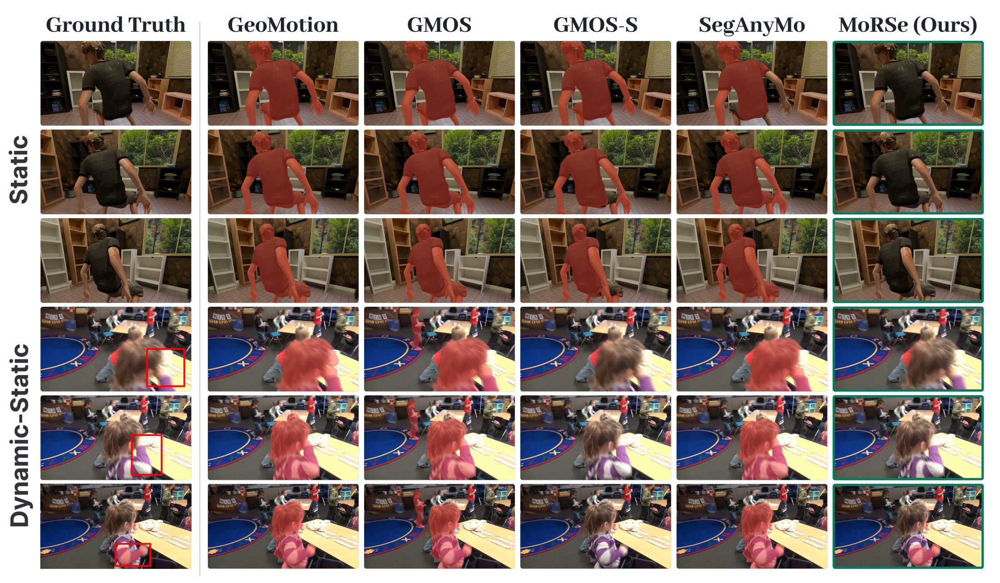
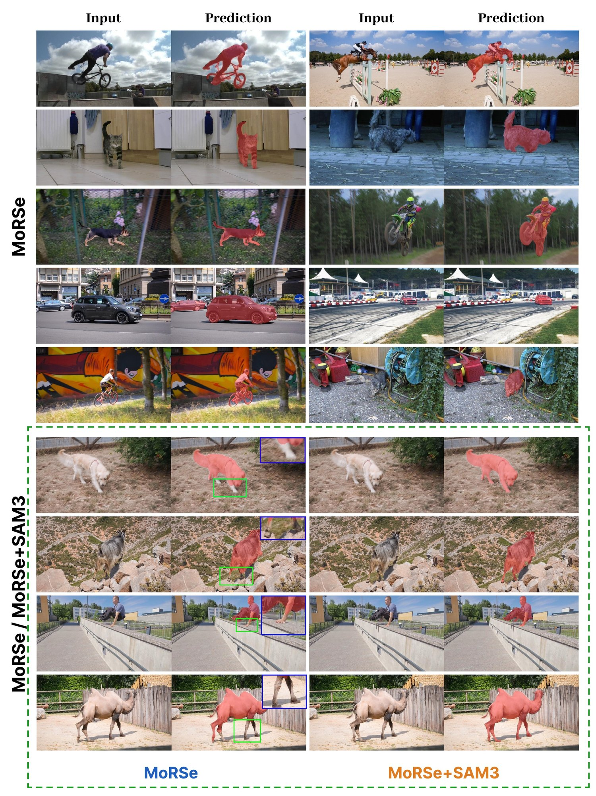

Motion is a pair relation
Motion is defined on an ordered source–target pair, not attached to an object for a whole clip. The same source stays silent when both frames lie in one stationary interval.
Comparison
Static Dynamic-Static Dynamic
Paper
Moving object segmentation is conventionally formulated at the sequence and object level, marking an entire instance as moving once it moves anywhere in a video. Recent instantaneous formulations distinguish moving from stationary intervals, but still generate masks at the object level through frozen segmentation foundation models. Because the mask is derived from an instance-level proposal, motion is typically attributed to the entire instance rather than localized to the regions that actually move.
Moreover, such instance-level predictions can produce masks even when no part of the instance is actually moving, revealing a more fundamental issue: motion is not an intrinsic property of an instance; it can only be determined by comparing at least two frames. Building on this premise, we introduce MoRSe, which jointly interprets two frames to predict a moving-region mask, distinguishing actual scene motion from apparent motion induced by the camera. A single RGB encoder replaces multi-stage foundation stacks, so no optical flow, point tracks, or separate mask generator is needed at inference.
We release MoRSe-5K, a benchmark of 42 sequences with Static, Dynamic-Static, and Dynamic settings designed to evaluate the model's ability to distinguish and localize moving and stationary regions under different camera and scene motion conditions. MoRSe outperforms both specialized moving object segmentation methods and dense 4D reconstruction methods with motion-thresholded predictions, while producing the fewest false positives on sequences where nothing moves.
Approach

Motion is defined on an ordered source–target pair, not attached to an object for a whole clip. The same source stays silent when both frames lie in one stationary interval.
No optical flow, point tracks, or frozen segmentation stack at inference. Target-conditioned cross-attention decodes each source coordinate into a motion logit.
A single target gives an instantaneous region; a target window gives a long-term region by a max over targets; a promptable segmenter recovers whole objects.
Evaluation
MoRSe leads moving-region segmentation on MoRSe-5K and stays competitive on conventional sequence-level MOS benchmarks.
“Scene flow” rows are thresholded into masks by each model's own released or automatic criterion, frozen before evaluation. best second third
| Method | Native output | Static | Dynamic-Static + Dynamic | ||||||
|---|---|---|---|---|---|---|---|---|---|
| Moving region | Moving object | ||||||||
| PER ↓ | FER ↓ | J ↑ | F ↑ | J&F ↑ | J ↑ | F ↑ | J&F ↑ | ||
| Dense 4D reconstruction: predict scene flow, converted to a mask by thresholding | |||||||||
| Trace Anything† | trajectory field | 21.01 | 100.00 | 32.10 | 35.90 | 34.00 | 30.18∗ | 38.23∗ | 34.21∗ |
| Any4D† | scene flow | 0.46 | 18.70 | 27.30 | 29.80 | 28.60 | 33.80∗ | 38.28∗ | 36.04∗ |
| 4RC† | scene flow | 0.53 | 18.20 | 40.50 | 41.50 | 41.00 | 39.56∗ | 43.69∗ | 41.62∗ |
| MoVieS† | scene flow | 0.64 | 43.80 | 39.80 | 48.50 | 44.10 | 40.42∗ | 49.38∗ | 44.90∗ |
| UniQuery4R | scene flow | 0.10 | 57.92 | 47.13 | 61.22 | 54.18 | 47.17∗ | 58.28∗ | 52.72∗ |
| Moving object segmentation: predict a mask directly | |||||||||
| FlowSAM† | motion mask | 32.26 | 100.00 | 13.24 | 18.84 | 16.04 | 16.35 | 22.03 | 19.19 |
| SegAnyMo† | motion mask | 10.25 | 93.28 | 38.50 | 47.76 | 43.13 | 42.77 | 53.29 | 48.03 |
| RoMo† | motion mask | 4.22 | 27.67 | 44.85 | 51.22 | 48.03 | 46.79 | 54.76 | 50.77 |
| Easi3R† | motion mask | 12.58 | 94.05 | 33.21 | 30.39 | 31.80 | 37.34 | 33.71 | 35.52 |
| VGGT4D† | motion mask | 4.91 | 99.94 | 35.14 | 40.61 | 37.88 | 43.84 | 46.72 | 45.28 |
| MoRe† | motion mask | 9.78 | 99.89 | 50.81 | 58.24 | 54.52 | 58.76 | 64.45 | 61.60 |
| GeoMotion† | motion mask | 9.29 | 99.87 | 55.52 | 61.98 | 58.75 | 64.33 | 68.67 | 66.50 |
| GMOS† | motion mask | 1.71 | 20.37 | 57.56 | 63.41 | 60.49 | 67.41 | 70.64 | 69.03 |
| GMOS-S† | motion mask | 0.60 | 6.82 | 66.65 | 72.64 | 69.64 | 76.30 | 79.56 | 77.93 |
| MoRSe | motion mask | 0.0009 | 0.75 | 73.91 | 82.06 | 77.98 | 75.84∗ | 82.79∗ | 79.32∗ |
† matched-window rerun from released code. ∗ the moving-object score comes from the shared SAM 3 readout; unmarked rows are scored on their own instance output. PER / FER are ego-motion false-positive rates on the Static split (lower is better).
Foreground–background MOS under one protocol, instance outputs unioned before evaluation. Every baseline is a controlled rerun from released code. best second third
| Method | DAVIS16-M | FBMS-59 | MoCA | ||||||
|---|---|---|---|---|---|---|---|---|---|
| J | F | J&F | J | F | J&F | J | F | J&F | |
| OCLR† | 70.25 | 69.60 | 69.92 | 61.71 | 62.87 | 62.29 | 12.08 | 17.86 | 14.97 |
| ABR† | 74.02 | 71.81 | 72.91 | 73.48 | 75.32 | 74.40 | 8.80 | 14.71 | 11.75 |
| FlowSAM† | 37.56 | 38.18 | 37.87 | 40.00 | 41.89 | 40.95 | 29.81 | 24.54 | 27.17 |
| SegAnyMo† | 75.89 | 80.82 | 78.35 | 68.80 | 76.07 | 72.44 | 58.81 | 66.10 | 62.46 |
| RoMo† | 70.11 | 73.87 | 71.99 | 58.86 | 61.07 | 59.96 | 11.50 | 12.39 | 11.94 |
| Easi3R† | 65.61 | 62.15 | 63.88 | 62.87 | 60.03 | 61.45 | 23.17 | 21.32 | 22.25 |
| VGGT4D† | 56.47 | 52.01 | 54.24 | 44.31 | 44.23 | 44.27 | 33.52 | 35.57 | 34.54 |
| MoRe† | 52.01 | 50.75 | 51.38 | 53.29 | 48.58 | 50.93 | 11.99 | 12.47 | 12.23 |
| GeoMotion† | 84.49 | 83.77 | 84.13 | 74.78 | 76.44 | 75.61 | 23.69 | 27.02 | 25.36 |
| GMOS† | 87.33 | 88.29 | 87.81 | 88.10 | 91.25 | 89.68 | 61.49 | 66.40 | 63.95 |
| MoRSe‡ | 80.25 | 81.88 | 81.07 | 78.34 | 81.79 | 80.06 | 22.96 | 25.15 | 24.06 |
| MoRSe + SAM 3 | 84.78 | 85.83 | 85.31 | 74.11 | 77.08 | 75.60 | 45.24 | 51.47 | 48.35 |
‡ MoRSe emits a moving region rather than instances, so its row is shown in grey for reference only and is left out of the ranking; the object-level entry is MoRSe + SAM 3. These benchmarks annotate whole instances, so parts of an object that hold still count as misses against a region output. GMOS, which predicts instances natively, leads all three.


Reference
If you find MoRSe useful, please cite our work.
@misc{jin2026movingregionsmovingobjects,
title={Moving Regions, Not Moving Objects: Segmenting What Actually Moves under Camera Motion},
author={Wenhua Jin and Tiancheng Chen and Sheng Tang and Jiahao Li and Yupeng Liu and Weiqi Zhang and Juntong Fang and Zesong Li},
year={2026},
eprint={2610.31209},
archivePrefix={arXiv},
primaryClass={cs.CV},
url={https://arxiv.org/abs/2610.31209},
}